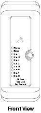

Source: DeltaV Scalable Process System — Hardware Installation and Reference Manual, D800001X312, April 2021 (Emerson). Appendix C, "Interface Specifications," pp. 125–178.
This lesson provides a comprehensive master reference for every digital (discrete) I/O card supported by the DeltaV system. Use the tables below to select the correct card for your application, verify wiring compatibility, and plan your power budget.
The following table provides a complete comparison of every digital I/O card available in the DeltaV system. Use this as your primary card selection reference.
| Card Type | Channels | Voltage Range | Current Rating | Isolation | Termination Type | Redundancy |
|---|---|---|---|---|---|---|
| DI, 8-Channel, 24 VDC, Dry Contact | 8 | 24 VDC | 100 mA at 24 VDC (±10%) | Channel-to-system: 1500 VDC Optically isolated |
I/O Terminal Block Optional: Fused I/O, 16-pin Mass Term |
Yes (Series 2) |
| DI, 8-Channel, 24 VDC, Isolated | 8 | 24 VDC | 100 mA at 24 VDC (±10%) | Channel-to-system: 1500 VDC Channel-to-channel isolated |
I/O Terminal Block Optional: Fused I/O |
No |
| DI, 8-Channel, 120 VAC, Dry Contact | 8 | 120 VAC | 7 mA at 120 VAC (field power) | Channel-to-system: 250 VAC Optically isolated |
I/O Terminal Block Optional: Fused I/O |
No |
| DI, 8-Channel, 120 VAC, Isolated | 8 | 120 VAC | None (no field power) | Channel-to-system: 250 VAC Channel-to-channel: 250 VAC |
I/O Terminal Block Optional: Fused I/O |
Yes (Series 2) |
| DI, 8-Channel, 230 VAC, Dry Contact | 8 | 230 VAC | 7 mA at 230 VAC (field power) | Channel-to-system: 250 VAC Optically isolated |
Fused I/O Terminal Block Optional: I/O Block |
No |
| DI, 8-Channel, 230 VAC, Isolated | 8 | 230 VAC | None (no field power) | Channel-to-system: 250 VAC Channel-to-channel: 250 VAC |
I/O Terminal Block Optional: Fused I/O |
No |
| DI, 32-Channel, 24 VDC, Dry Contact | 32 | 24 VDC | 150 mA at 24 VDC (±10%) | Channel-to-system: 1500 VDC Optically isolated |
32-Channel Terminal Block Optional: 40-pin Mass Term |
Yes (Series 2 Plus) |
| DO, 8-Channel, 24 VDC, High-Side | 8 | 2–60 VDC (Series 2: 24 VDC ±10%) |
1.0 A continuous per channel Inrush: 4.0 A (<100 ms), 6.0 A (<20 ms) 3.0 A max per card |
Channel-to-system: 1500 VDC Optically isolated |
Fused I/O Terminal Block Optional: I/O, 10/16-pin Mass Term |
Yes (Series 2) |
| DO, 8-Channel, 24 VDC, Isolated | 8 | 2–60 VDC | 1.0 A continuous per channel Inrush: 4.0 A (<100 ms), 6.0 A (<20 ms) |
Channel-to-system: 1500 VDC Channel-to-channel isolated |
I/O Terminal Block Optional: Fused I/O, 16-pin Mass Term |
No |
| DO, 8-Channel, 120/230 VAC, High-Side | 8 | 20–250 VAC | 1.0 A continuous per channel Inrush: 5 A (<100 ms), 20 A (<20 ms) 3.0 A max per card up to 5°C 2.0 A max per card up to 60°C |
Channel-to-system: 250 VAC Optically isolated |
Fused I/O Terminal Block Optional: I/O Block |
No |
| DO, 8-Channel, 120 VAC/230 VAC, Isolated | 8 | 20–250 VAC | 1.0 A continuous per channel Inrush: 5 A (<100 ms), 20 A (<20 ms) 3.0 A max per card up to 50°C 2.0 A max per card up to 60°C |
Channel-to-system: 250 VAC Channel-to-channel: 250 VAC |
I/O Terminal Block Optional: Fused I/O |
No |
| DO, 32-Channel, 24 VDC, High-Side | 32 | 24 VDC (±10%) (Series 2: 24 VDC −15%/+20%) |
100 mA per channel 3.2 A at 24 VDC per card |
Channel-to-system: 1500 VDC Optically isolated |
32-Channel Terminal Block Optional: 40-pin Mass Term |
Yes (Series 2 Plus) |
| I.S. DI, 16-Channel | 16 | 7.0–9.0 V (sensor voltage) | 350 mA (LocalBus) | LocalBus-to-channel: 60 VAC I.S. channel-to-non-I.S. rail: 250 VAC |
I.S. 16-Channel Terminal Block (required) |
No |
| I.S. DO, 4-Channel | 4 | 25 VDC (max) 11 V at 45 mA |
45 mA min per channel 560 mA LocalBus |
LocalBus-to-channel: 60 VAC I.S. channel-to-non-I.S. rail: 250 VAC |
I.S. 8-Channel Terminal Block Optional: I.S. loop disconnect |
No |
| Parameter | Specification |
|---|---|
| Number of Channels | 8 |
| Isolation | Optically isolated from system; factory tested to 1500 VDC |
| Detection Level for ON | > 2.2 mA |
| Detection Level for OFF | < 1 mA |
| Impedance | 5 kΩ |
| LocalBus Current | 75 mA typical, 100 mA max S2: 90 mA typical, 150 mA max |
| Field Circuit Power | 100 mA at 24 VDC (±10%) |
| Optional Fuse (Simplex only) | 2.0 A |
| Parameter | Specification |
|---|---|
| Number of Channels | 8 |
| Isolation | Channel-to-system: 250 VAC Channel-to-channel: 250 VAC |
| Detection Level for ON | 84 VAC to 130 VAC |
| Detection Level for OFF | 0 VAC to 34 VAC |
| Input Load (Contact Cleaning) | 2 mA at 120 VAC |
| Input Impedance | 60 kΩ |
| LocalBus Current | 75 mA typical, 100 mA max |
| Field Circuit Power | None |
| Parameter | Specification |
|---|---|
| Number of Channels | 8 |
| Isolation | Channel-to-system: 250 VAC; optically isolated |
| Detection Level for ON | > 0.71 mA |
| Detection Level for OFF | < 0.28 mA |
| Impedance | 238 kΩ |
| LocalBus Current | 75 mA typical, 100 mA max |
| Field Circuit Power | 7 mA at 230 VAC |
| Parameter | Specification |
|---|---|
| Number of Channels | 8 |
| Isolation | Channel-to-system: 250 VAC Channel-to-channel: 250 VAC |
| Detection Level for ON | 168 VAC to 250 VAC |
| Detection Level for OFF | 0 VAC to 68 VAC |
| Input Load (Contact Cleaning) | 1 mA at 230 VAC |
| Input Impedance | 238 kΩ |
| LocalBus Current | 75 mA typical, 100 mA max |
| Field Circuit Power | None |
| Parameter | Specification |
|---|---|
| Number of Channels | 32 |
| Isolation | Optically isolated from system; factory tested to 1500 VDC |
| Detection Level for ON | > 2 mA |
| Detection Level for OFF | < 0.25 mA |
| Impedance | 5 kΩ |
| LocalBus Current | 50 mA typical, 75 mA max |
| Field Circuit Power | 150 mA at 24 VDC (±10%) S2: 150 mA at 24 VDC (−15%/+20%) |
| Parameter | Specification |
|---|---|
| Number of Channels | 8 |
| Isolation | Optically isolated from system; factory tested to 1500 VDC |
| Output Range | 2 VDC to 60 VDC S2: 24 VDC ±10% |
| Output Rating | 1.0 A continuous per channel Inrush: 4.0 A (<100 ms), 6.0 A (<20 ms) 3.0 A max per card |
| Off-State Leakage | 1.2 mA maximum |
| LocalBus Current | 100 mA typical, 150 mA max S2: 90 mA typical, 150 mA max |
| Field Circuit Power | 3.0 A at 24 VDC (±10%) |
| Line Fault Detection (S2) | Short: < 5 Ω for > 3 s Open: > 25 kΩ for guaranteed detection |
| Parameter | Specification |
|---|---|
| Number of Channels | 8 |
| Isolation | Channel-to-system: 1500 VDC; channel-to-channel isolated |
| Output Range | 2 VDC to 60 VDC |
| Output Rating | 1.0 A continuous per channel Inrush: 4.0 A (<100 ms), 6.0 A (<20 ms) |
| Off-State Leakage | 1.2 mA maximum |
| LocalBus Current | 100 mA typical, 150 mA max |
| Field Circuit Power | None |
| Optional Fuse | 2.0 A (inrush 5.0 A for <10 ms at 0.1% duty cycle) |
| Parameter | Specification |
|---|---|
| Number of Channels | 8 |
| Isolation | Channel-to-system: 250 VAC; optically isolated |
| Output Range | 20 VAC to 250 VAC |
| Output Rating | 1.0 A continuous per channel Inrush: 5 A (<100 ms), 20 A (<20 ms) 3.0 A max per card up to 5°C 2.0 A max per card up to 60°C S2: 3.0 A max per card |
| Off-State Leakage | 2 mA max at 120 VAC; 4 mA max at 230 VAC |
| LocalBus Current | 100 mA typical, 150 mA max |
| Field Circuit Power | 3.0 A at 120 VAC or 230 VAC |
| Parameter | Specification |
|---|---|
| Number of Channels | 8 |
| Isolation | Channel-to-system: 250 VAC; channel-to-channel: 250 VAC |
| Output Range | 20 VAC to 250 VAC |
| Output Rating | 1.0 A continuous per channel Inrush: 5 A (<100 ms), 20 A (<20 ms) 3.0 A max per card up to 50°C 2.0 A max per card up to 60°C S2: 3.0 A max per card |
| Off-State Leakage | 2 mA max at 120 VAC; 4 mA max at 230 VAC |
| LocalBus Current | 100 mA typical, 150 mA max |
| Field Circuit Power | None |
| Parameter | Specification |
|---|---|
| Number of Channels | 32 |
| Isolation | Optically isolated from system; factory tested to 1500 VDC |
| Output Range | 24 VDC (±10%) S2: 24 VDC (−15%/+20%) |
| Output Rating | 100 mA per channel |
| Off-State Leakage | 0.1 mA maximum |
| LocalBus Current | 100 mA typical, 150 mA max |
| Field Circuit Power | 3.2 A at 24 VDC (±10%) S2: 3.2 A at 24 VDC (−15%/+20%) |
DeltaV DO cards support three configurable channel types. Each channel can be independently configured:
| Channel Type | Description | Fail-Action: Hold Last Value | Fail-Action: Go to Configured State |
|---|---|---|---|
| Discrete Output | Output stays in the last state submitted by the controller | Output holds last state | Output drives to configured faultstate value |
| Momentary Output | Output is active for a pre-configured time period (100 ms to 100 s) | Output finishes current pulse | Output drives to faultstate; channel re-configured as latched |
| Continuous Pulse Output | Output is active as a percentage of a pre-configured base time period (100 ms to 100 s) | Output continues pulsing | Output drives to faultstate; channel re-configured as latched |
| Parameter | Specification |
|---|---|
| Number of Channels | 16 |
| Isolation | LocalBus-to-channel: 60 VAC I.S. channel-to-non-I.S. rail: 250 VAC |
| Detection Level for ON | > 2.1 mA |
| Detection Level for OFF | < 1.2 mA |
| Voltage Applied to Sensor | 7.0 to 9.0 V from 1 kΩ ±10% |
| Line Fault Detection | Short: < 100 Ω; Open: > 50 kΩ |
| Max Input Frequency | 20 Hz |
| Min Pulse Width Detected | 45 ms |
| LocalBus Current | 350 mA |
| Parameter | Specification |
|---|---|
| Number of Channels | 4 |
| Isolation | LocalBus-to-channel: 60 VAC I.S. channel-to-non-I.S. rail: 250 VAC |
| Output Range | 22 V (open circuit); 11 V at 45 mA; 25 VDC max |
| Output Rating | 45 mA minimum |
| Current Limit per Channel | 45 mA |
| LocalBus Current | 560 mA |
| Channel Types | Discrete output, Momentary output, Continuous pulse output |
When planning your I/O subsystem, ensure the total LocalBus current draw of all installed cards does not exceed the carrier's capacity. The following table summarizes LocalBus current requirements.
| Card Type | LocalBus Current (typical) | LocalBus Current (max) | Field Power Required |
|---|---|---|---|
| DI, 8-Ch, 24 VDC, Dry Contact | 75 mA | 100 mA (S2: 150 mA) | 100 mA at 24 VDC |
| DI, 8-Ch, 120/230 VAC, any | 75 mA | 100 mA | 7 mA (Dry) / None (Isolated) |
| DI, 32-Ch, 24 VDC, Dry Contact | 50 mA | 75 mA | 150 mA at 24 VDC |
| DO, 8-Ch, 24 VDC, High-Side | 100 mA (S2: 90 mA) | 150 mA | 3.0 A at 24 VDC |
| DO, 8-Ch, 24 VDC, Isolated | 100 mA | 150 mA | None (self-powered) |
| DO, 8-Ch, 120/230 VAC, any | 100 mA | 150 mA | 3.0 A (High-Side) / None (Isolated) |
| DO, 32-Ch, 24 VDC, High-Side | 100 mA | 150 mA | 3.2 A at 24 VDC |
| I.S. DI, 16-Ch | — | 350 mA | None |
| I.S. DO, 4-Ch | — | 560 mA | None (I.S. power) |

Q1: What is the maximum continuous current per channel for a DO, 8-Channel, 24 VDC, High-Side card?
Q2: Which DI card type provides channel-to-channel isolation: Dry Contact or Isolated?
Q3: What is the output rating per channel for the DO, 32-Channel, 24 VDC, High-Side card?
Q4: How many channels does the I.S. DO card support, and what is the current limit per channel?
Q5: What is the maximum LocalBus current for the I.S. DO, 4-Channel card?
A1: 1.0 A continuous per channel (inrush: 4.0 A for <100 ms; 6.0 A for <20 ms)
A2: Isolated — Isolated cards provide channel-to-channel isolation. Dry Contact cards share a common return.
A3: 100 mA per channel
A4: 4 channels; 45 mA current limit per channel
A5: 560 mA
Pages 125–178, Appendix C of D800001X312